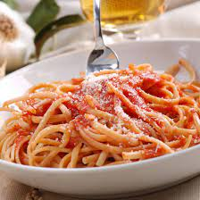

Spaghetti

Description
Ingredients
- five cloves of garlic
- one or two tomatoes
- tomatoe paste
- salt and pepper
- pinch of sugar
- dry or fresh oregano
- olive oil
- parmesan
- spaghetti
Steps
- Peel and then chop the garlic. You can add more
or use less, depending on your taste.
- Peel the skin of the tomatoes, it's better but not completely necessary.
Chop the tomatoes into little pieces.
- Heat few spoons of oil in a frying pan, then add the garlic.
- Let the garlic get a little color but be carefull not to burn it.
- Throw the chopped tomatoes in and stir for some time.
- Add the tomatoe paste, pinch of sugar, salt and pepper, dry oregano,
pour a bit of water. Stir stir and stir, let boil for some time, be careful,
it might be popping into your eyes. Turn the heat down a little. Enjoy the smell.
- The sauce is ready. Now it's time to boil the pasta as written on the package.
- Drain the pasta when cooked and throw it into the sauce. Mix and stir.
- Put the delicious spagetti onto a plate and put on some parmessan. As much as you wish.
- Bon appetit.